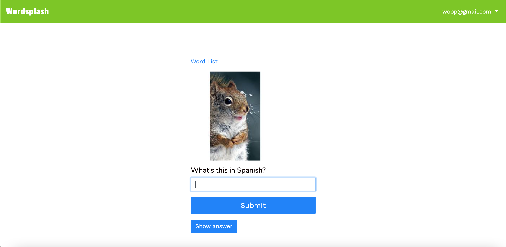

👨🏻💻
Hi, I'm Victor.
My interest in programming comes from my belief that it is a powerful tool that can be used to rapidly create solutions that improve society and make everyday life easier. I have a passion for great web design, well thought out features, and good usability.
For inquiries, I can be contacted at vchiang7@gmail.com. I live in California but previously lived in Mexico City and New York. I am open to opportunities that require relocation.
Projects
Restaurant website: A potential freelance project yet to launch. It's goal is to provide any restaurant with a simple way to get a responsive website with ordering and payments features up and running fast.Technologies used: Ruby on Rails, Javascript, Bootstrap, media queries, CSS grid, Flexbox
Integrations: Stripe payments API, Active Admin

Personal website for selling my things: When I was still living in Mexico City and moving, I created this personal website to list everything I was selling.
Technologies used: Ruby on Rails, Javascript, Bootstrap, media queries, CSS grid, Flexbox
Wordsplash: A flashcards app for learning Spanish vocabulary that I built for myself.
Technologies used: Ruby on Rails, Javascript, Bootstrap, media queries, CSS grid, Flexbox, Microsoft Translator API, Bing Images Search API
APIs used: Microsoft Translator API, Bing Images Search API
Streety: An MVP for finding great street food in Mexico City. (Mobile only. Lead developer on this group project with T.J. Zuvic and Rodrigo Sanchez at Lewagon)
Technologies used: Ruby on Rails, Javascript, Bootstrap, background jobs & sidekiq
Integrations: Mapbox, Google Text to Speech API
JustRide: A peer to peer marketplace for renting motorcycles. (Desktop only. lead developer on this group project with T.J. Zuvic and Rodrigo Sanchez at Lewagon)
Technologies used: Ruby on Rails, Javascript, Bootstrap
Integrations: Mapbox